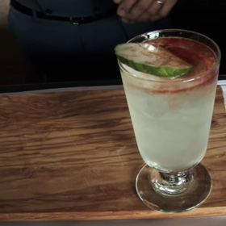

Bebidas, Drinks, Gim, Vermute Branco
1 dose e meia de Gin (45ml)
2/3 de dose de suco do limão
1/2 de dose de xarope de açúcar (ou açúcar)
Releitura
2/3 de dose de Martini Branco
2 a 1 dose e meia de água com gás
2 a 3 gotas de Angustura amarela
1 fatia de Pepino
Adicione o Gin, suco de limão e o açúcar então o gelo.
Na sequência adicione o Martini
Misture bem e sirva no copo.
Na sequência adicione a água com gás, o pepino e a angustura.